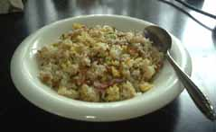

納豆チャーハン
料理館入口へ

○材料(一人前)
納豆1パック
鰹節
たまご1個
ベーコン一枚
ごはん
しょうゆ、油
○作り方
たまごを溶いて、フライパンに油ででやわらかく固まるくらい火を通し、一旦取り出します。
納豆のパックに入っているたれなどいれて練り、フライパンに油でその納豆をいためます。
そこに適当に切ったベーコンを加え、適当にいためます。
そこにごはんを加えていため、最初のたまごと鰹節を加えて混ぜ、しょうゆで味を整えてできあがり。
火を通した納豆が香ばしく、食べたことない人、納豆が嫌いな人にとっても予想以上に美味しく感じられると思います。これはお薦めです。万能ねぎなどを加え ると緑が加わって見た目もさらに良くなるかも。